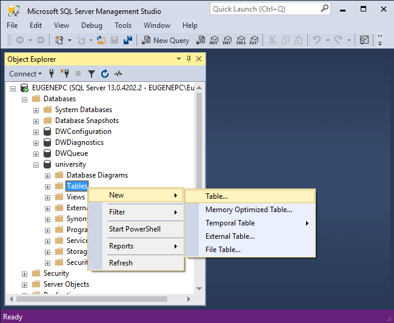
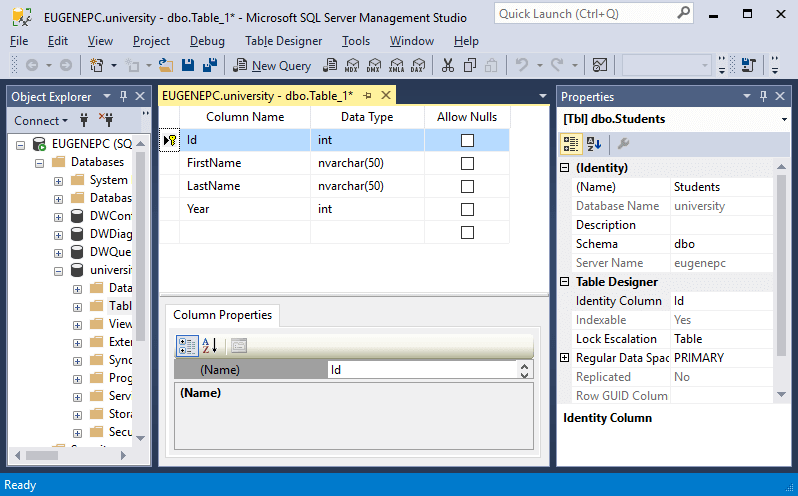
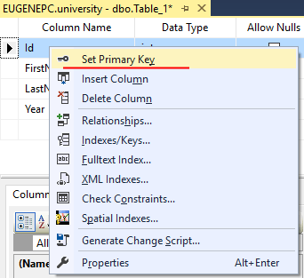
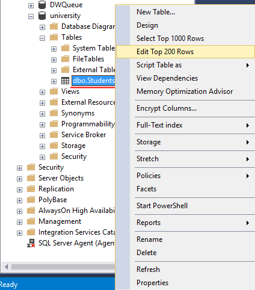
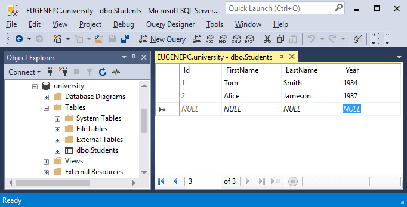
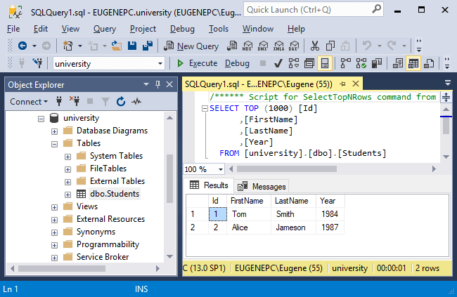

Создание таблиц
Ключевым объектом в базе данных являются таблицы. Таблицы состоят из строк и столбцов. Столбцы определяют тип информации, которая хранится, а строки содержат значения для этих столбцов.
В прошлой теме была создана база данных university. Теперь определим в ней первую таблицу. Опять же для создания таблицы в SQL Server Management Studio можно применить скрипт на языке SQL, либо воспользоваться графическим дизайнером. В данном случае выберем второе.
Для этого раскроем узел базы данных university в SQL Server Management Studio, нажмем на его подузел Tables правой кнопкой мыши и далее в контексто меню выберем New -> Table...:

После этого нам откроется дизайнер таблицы. В центральной части в таблице необходимо ввести данные о столбцах таблицы. Дизайнер содержит три поля:
Column Name: имя столбца
Data Type: тип данных столбца. Тип данных определяет, какие данные могут храниться в этом столбце. Например, если столбец представляет числовой тип, то он может хранить только числа.
Allow Nulls: может ли отсутствовать значение у столбца, то есть может ли он быть пустым

Допустим, нам надо создать таблицу с данными учащихся в учебном заведении. Для этого в дизайнере таблицы четыре столбца: Id, FirstName, LastName и Year, которые будут представлять соответственно уникальный идентификатор пользователя, его имя, фамилию и год рождения. У первого и четвертого столбца надо указать тип int (то есть целочисленный), а у столбцов FirstName и LastName - тип nvarchar(50) (строковый).
Затем в окне Properties, которая содержит свойства таблицы, в поле Name надо ввести имя таблицы - Students, а в поле Identity ввести Id, то есть тем самым указывая, что столбец Id будет идентификатором.
Имя таблицы должно быть уникальным в рамках базы данных. Как правило, название таблицы отражает название сущности, которая в ней хранится. Например, мы хотим сохранить студентов, поэтому таблица называется Students (слово студент во множественном числе на английском языке). Существуют разные мнения по поводу того, стоит использовать название сущности в единственном или множественном числе (Student или Students). В данном случае вопрос наименования таблицы всецело ложится на разработчика базы данных.
И в конце нам надо отметить, что столбец Id будет выполнять роль первичного ключа (primary key). Первичный ключ уникально идентифицирует каждую строку. В роли первичного ключа может выступать один столбец, а может и несколько.
Для установки первичного ключа нажмем на столбец Id правой кнопкой мыши и в появившемся меню выберем пункт Set Primary Key.

После этого напротив поля Id должен появиться золотой ключик. Этот ключик будет указывать, что столбец Id будет выполнять роль первичного ключа.
И после сохранения в базе данных university появится таблица Students:
Мы можем заметить, что название таблицы на самом деле начинается с префикса dbo. Этот префикс представляет схему. Схема определяет контейнер, который хранит объекты. То есть схема логически разграничивает базы данных. Если схема явным образом не указывается при создании объекта, то объект принадлежит схеме по умолчанию - схеме dbo.
Нажмем правой кнопкой мыши на название таблицы, и нам отобразится контекстное меню с опциями:

С помощью этих опций можно управлять таблицей. Так, опция Delete позволяет удалить таблицу. Опция Design откроет окно дизайнера таблицы, где мы можем при необходимости внести изменения в ее структуру.
Для добавления начальных данных можно выбрать опцию Edit Top 200 Rows. Она открывает в виде таблицы 200 первых строк и позволяет их изменить. Но так как у нас таблица только создана, то естественно в ней будет никаких данных. Введем пару строк - пару студентов, указав необходимые данные для столбцов:

В данном случае я добавил две строки.
Затем опять же по клику на таблицу правой кнопкой мыши мы можем выбрать в контекстном меню пункт Select To 1000 Rows, и будет запущен скрипт, который отобразит первые 1000 строк из таблицы:
